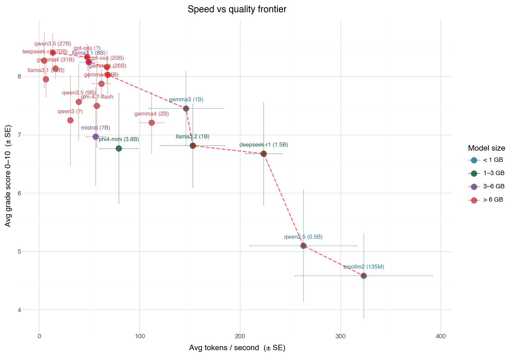

#
Published 2026-05-08

Jankmarking: Janky Benchmarking
I put together some evals for local benchmarking. I'm mostly interested in approximately measuring performance versus speed because I don't like waiting while my macbook imitiates a jet turbine in noise and temperature and want to get good enough answers locally. For anyhting bigger the cloud is still the move. The problem is my benchmarks are -- to use a human em-dash and quote the kids these days "hella jank".
my janky benchmark questions:
- hello: Say hello in one sentence.
- haiku: Write a haiku about autumn leaves.
- reasoning: If a train travels 60 mph for 2.5 hours, how far does it go? Show your work.
- summarize: Summarize the following in two sentences: The Apollo program was a NASA spaceflight program that successfully landed humans on the Moon from 1969 to 1972, using the Saturn V rocket and Command/Service Module.
- code_simple: Write a Python function that returns the nth Fibonacci number.
- code_complex: Implement a thread-safe LRU cache in Python with O(1) get and put. Include type hints and a brief docstring.
These aren't very good. They're half AI generated. The summarization one is a single sentence and is actually backwards asking for a summary longer than the input sentence... (it used to be longer but I think it got lost at some point when I copy and pasted it. Never made it into version control... )
And yet, these are directionally correct. The better models cluster together scorewise.
For serious work, make sure your bench marks aren't jankmarks.